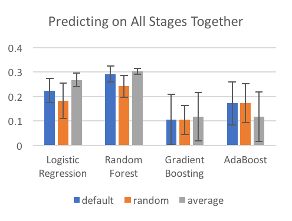
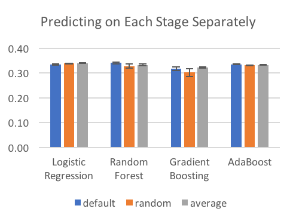

How Did I Fill Blanks?
Of the data I was interested in, 42% of the values were blank.
Some were blank because that users hadn't reached a stage. If a user stopped after filling in information about their house (stage 3) then I won’t have any information about their employment (stage 4).
Others were blank becuase the users skipped that field. If a user didn’t want to enter their birthdate then I won’t have any information about their age.
I considered three ways of handling these values:
- Randomly: Fill in blank values with a value drawn at random from the possible values in the training data, weighted by frequency.
- Average: Fill in blank values with the average of the values in the training data.
- Default: Fill in blank values with a default value determined based on human (my) judgement.
I tested each method for each of four models (logistic regression, random forest, gradient boosting, and adaboost), under two scenarios (all users tested together, users tested separately by stages).


Observations:
- It’s much better to predict on each stage separately.
- The method of filling in blanks doesn’t really matter when we predict on each stage separately, but it’s hugely important when group all stages together. This is probably a result of having so many fewer nan values.
- Filling in values randomly does the worst. This was a disappointment to me. Conceptually, this was the method I liked most.